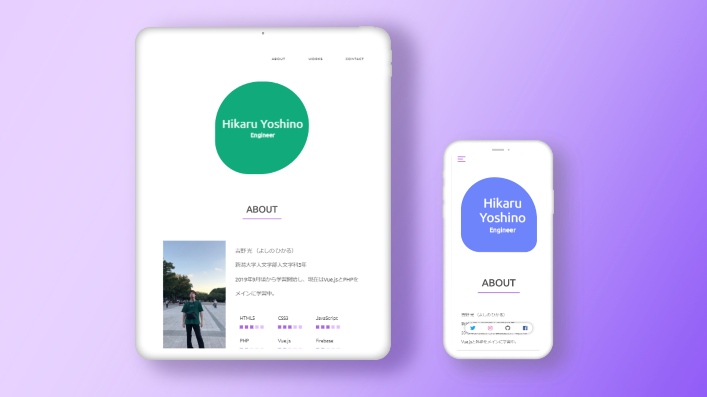

工夫した点
- 色の構成。白をベース色、紫色をサブ色とし、その他の色と合わせて比率が7:2:1ぐらいになるように意識した。
- 重要なUIの配置。スマートフォンとタブレット表示時のハンバーガーメニューを右上に設置した。ページ上部にあることで目に入りやすく、指が届きやすい。また、スマートフォン表示時にはSNSの外部リンクをページ下部にfixedした。これもユーザーの指が届きやすく、より自分を知ってもらえるよう誘導することができると考えた。
大変だった点
- デザインカンプ制作に着手してしまい、完成させるまでの道のりやコンセプトが定まらまかった。
- CSS設計。命名規則や設計手法をまったく考えていなかったので苦戦した。
今後追加していく機能
未定